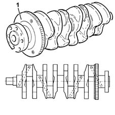
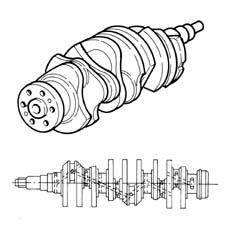
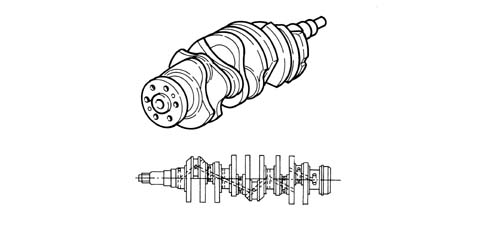
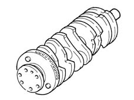
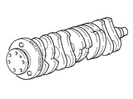
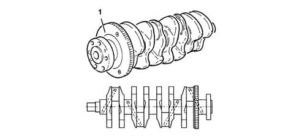
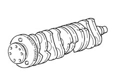

1024A crank shaft
- Path
- Descriptions > 10 ENGINE > 1024 CRANKSHAFT AND FLYWHEEL > 1024A crank shaft
- Kind
- system description
- Applies to
- engines: 1.6 TS , 1.8 TS, 2.0 JTS, 2.5 V6, 3.2 V6, 1.9 JTD 8v , 1.9 JTD 16v, 2.0 JTS, 2.4 JTD 10v, 2.4 JTD 20v; all production periods
- Interactive page
- https://sloeber94.github.io/elrnDB-a156/en/#/3232826
Applies to: engines: 1.6 TS , 1.8 TS; all production periods
It is of forged high-tensile alloy steel, induction hardened on the journals and crankpins and rolled on the grooves.
It rests on five main bearings with bearing shells graded into three sizes.
The crankshaft endfloat is adjusted by two thrust washers located in the central main bearings.
Eight counterweights ensure that the rotating masses of the crankshaft are precisely balanced.
A channel runs along the inside of the shaft to lubricate the main journals and crank pins.
The phonic wheel (1) for the rpm sensor is mounted on the rear.

Applies to: engines: 2.5 V6; all production periods
Forged in high-tensile alloy steel and nitrided, it rests on four main journals and the endfloat is on the rear journal.
Nine counter-weights ensure that the rotating masses are precisely balanced.
A channel runs along the inside of the shaft to lubricate the main journals and crank pins.

Applies to: engines: 3.2 V6; all production periods
CONSTRUCTION FEATURES
Forged in high-tensile alloy steel and nitrided, it rests on four main journals and the endfloat is on the rear journal.
Nine counter-weights ensure that the rotating masses are precisely balanced.
A channel runs along the inside of the shaft to lubricate the main bearings and big end bearings.

Applies to: engines: 1.9 JTD 8v ; all production periods
Made from cast iron, it rests on the six main journals and the endfloat is adjusted by two thrust washers located in the rear main bearing.
Eight counterweights ensure that the rotating masses of the crankshaft are precisely balanced.
A channel runs along the inside of the shaft to lubricate the main journals and crank pins.
A flywheel for the rpm sensor is fitted at the rear.

Applies to: engines: 2.4 JTD 10v; all production periods
Made from steel, it rests on the six main journals and the endfloat is adjusted by two thrust washers located in the rear main journal.
Ten counter-weights ensure that the rotating masses are precisely balanced.
A channel runs along the inside of the shaft to lubricate the main journals and crank pins.
A flywheel for the rpm sensor is fitted at the rear.

Applies to: engines: 2.0 JTS, 2.0 JTS; all production periods
CONSTRUCTION FEATURES
It is made out of forged high-tensile alloy steel, induction hardened on the journals and crankpins and rolled on the grooves.
It rests on five main bearings with bearing shells graded into three sizes.
The crankshaft endfloat is adjusted by two thrust washers located in the central main bearings.
Eight counterweights ensure that the rotating masses of the crankshaft are precisely balanced.
A channel runs along the inside of the shaft to lubricate the main bearings and big end bearings.
The phonic wheel (1) for the rpm sensor is mounted on the rear.

Applies to: engines: 1.9 JTD 16v; all production periods
CONSTRUCTION FEATURES
Made from steel, it rests on the six main journals and the endfloat is adjusted by two thrust washers located in the rear main bearing.
Eight counterweights ensure that the rotating masses of the crankshaft are precisely balanced.
A channel runs along the inside of the crankshaft to lubricate the main bearings and big end bearings.
The phonic wheel (1) for the rpm sensor is mounted on the rear.
Applies to: engines: 2.4 JTD 20v; all production periods
COMPONENT DESCRIPTION
CRANKSHAFT
Specifcations
Type
Made from steel, it rests on the six main journals and the endfloat is adjusted by two thrust washers located in the rear main journal.
Ten counterweights ensure that the rotating masses of the crankshaft are precisely balanced.
A series of channels run along the inside of the crankshaft to lubricate the main bearings and big end bearings.
A flywheel for the rpm sensor is fitted at the rear.
